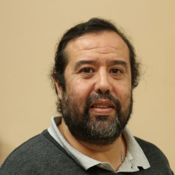
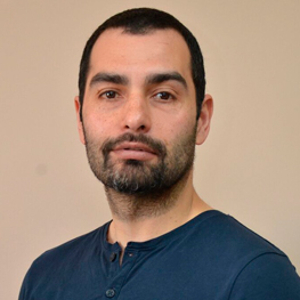
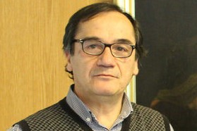

Investigadores |
Tomás BarriosProfesor Asociado - DMFA-UCSC |
Edwin M. BehrensProfesor Asociado - DIC-UCSC |
Jessika CamañoProfesor Asociado - DMFA-UCSC |
||||
Sergio CaucaoProfesor Auxiliar - DMFA-UCSC |
Luis F. GaticaProfesor Asociado - DMFA-UCSC |
Abner H. PozaProfesor Asistente - DMFA-UCSC |